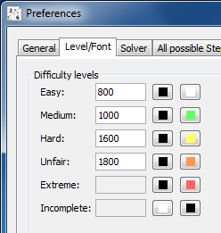

Chapter 4: Creating Sudokus
Table of Contents
- Rating and difficulty levels
- Create sudokus in learning/practising mode
- Create sudokus containing specific techniques
- Batch creation of sudokus
- Sources for sudokus
Rating and difficulty levels
HoDoKu's rating system is meant primarily as a tool for filtering out
certain types of sudokus. Unlike the rating mechanisms in many other solvers
it is fully configurable and can't therefore provide an absolute measure of
difficulty for a sudoku (if such a thing is even possible...). For obtaining
a stable difficulty rating many other programs are freely available (e.g.
Sudoku Explainer [dead link]).
Every technique has two attributes in HoDoKu:
- Level
- Score
The "level" assignes the technique to one of HoDoKu's five difficulty levels (Easy, Medium, Hard, Unfair, Extreme). The level of a sudoku cannot be smaller than the level of the hardest step contained in it's solution (but it can be greater, see below). The "score" of all steps in the solution is simply summed up, the sum becomes the score of the sudoku.
To change the attributes of a step click on a step. The attributes panel is filled with the step's attributes which can now be changed. Changing attributes on one or more steps may of course change the rating of any sudoku that contains those steps.
Difficulty levels have assigned a minimum and a maximum score (the minimum score for "Medium" is one greater than the maxmimum score for "Easy"). The input dialog under "Edit|Preferences|Level/Font" let's you set the maximum scores only (the maximum score of "Extreme" is infinity, incomplete doesn't have a score). These level scores are taken into account when rating a sudoku. How this is done differs for rating existing sudokus and for rating sudokus when creating them:
- In both cases, if the score of a sudoku is greater than the maximum score of the level of the hardest step, the difficulty level of the sudoku is determined only by it's score (sudokus containing many hard steps are more difficult than sudokus with only a few hard steps).
- If the score of the sudoku belongs to a difficulty level that's smaller than the level of the hardest step the step level determines the level of the sudoku. If however HoDoKu tries to create a sudoku with a specific difficulty level and the score of the sudoku indicates that the sudoku is too easy the newly created sudoku is discarded.
The colors of the difficulty levels (as shown in the screenshot) are used to color code the corresponding steps in the "Solution path" and "Summary" views. They can of course be freely adjusted.
Create sudokus in learning/practising mode
Learning and practising mode (see Game modes) are the ideal instruments to create sudokus that contain specific steps. Choose "Mode|Learning" or "Mode|Practising" from the menu, specify a technique and create a new sudoku. In both modes the new sudoku will contain at least one instance of the specified technique. In training mode the sudoku will automatically be solved up to the point where the technique can be found.
Create sudokus containing specific techniques
If you can't use learning/practising mode (see above), for example because you want to find a very advanced step, a second method is available.
By using the configurable rating system it is easy to create sudokus that contain specific techniques (this feature is meant mostly for steps of level "Unfair" or greater). Let us assume that you try to create a sudoku that has an AIC in it's solution path. You can of course simply create sudokus with level "Unfair" (the default level of AIC") but you will have to check every created sudoku for AICs (e.g. using the Summary view).
An easier way would be the following:
- Assign AIC a difficult level of "Medium" and an unrealistically high score (say 5000).
- Set the maximum score of level "Easy" to 5000.
- Set the maximum score of Level "Medium" to 20000 and adjust the scores of the higher levels accordingly.
- Create a new sudoku for level "Medium".
Why does this work? There is no chance that a sudoku could be found that get's a score of greater 5000 using the "normal" medium techniques only ("Medium" contains Singles, Locked Candidates, Pairs, and Triples and normally scores between 600 and 1200 approximately). But if the sudoku contains a hard step other than AIC (which now counts as "Medium"), the sudoku's level will be "Hard" or greater and it will be discarded. The only sudokus that can be "Medium" and have a rating greater than 5000 are sudokus with at least one AIC in them.
It is of course possible to assign new attributes to more than one step. Every newly created sudoku will contain at least one of the changed steps.
Please note, that the solver strategy is not influenced by assigning different attributes to solution techniques. If the technique you are looking for is rather low down in the solver hierarchy it is likely that possible suitable sudokus are never found because they will contain some other non trivial step as well and will thus be discarded. It is therefore recommended to push changed techniques higher up in the solver hierarchy.
Batch creation of sudokus
HoDoKu can be run in batch mode (see Command line options). Batch mode can be used to create sudokus with specific steps or with a specific level too. The options used for that purpose are /s /sc for steps and /s /sl for levels.
/s instructs HoDoKu to search for sudokus, /sc tells HoDoKu which steps it should look for in sudokus and /sl specifies a difficulty level.
The argument for /sc is a series of step designators. Every step designator contains a step name (abbreviated step names can be listed with /lt), a sudoku type, and the desired number of eliminations (the last two are optional).
The sudoku type describes how the step should be located within the solution:
- :3 - only singles allowed before and after the step
- :2 - SSTS before and singles after the step allowed
- :1 - SSTS before and after the step possible
- :0 - no restrictions
SSTS stands for "Simple Sudoku Technique Set" and contains Singles, Locked Candidates, Hidden/Naked/Locked Subsets, X-Wing, Swordfish, Jellyfish, XY-Wing, Simple Colors, and Multi Colors (this set of techniques is often used in forums to reduce sudokus to the point where the fun begins).
The desired number of eliminations has to start with a '+' followed by an operator and the number of eliminations. Valid operators are 'e' for 'equals', 'l' for 'less than', and 'g' for 'greater than'.
Although an arbitrary number of step definitions can be used on a single batch run of HoDoKu, every sudoku will contain only one of the techniques (techniques that are contained in SSTS can of course appear without restriction in the SSTS parts of the solution).
The command line for a batch run that should produce sudokus containing Sworfishes would be:
java -Xmx512m -jar hodoku.jar /s /sc bf3
or
hodoku.exe /s /sc bf3
The command line for a batch run that should produce only hard sudokus would be:
java -Xmx512m -jar hodoku.jar /s /sl 2
or
hodoku.exe /s /sl 2
/o can be used to specify an output file, /f to read options from a file, /c to supply a specific hcfg file (see Saving/Loading configurations and sudokus). For more options please consult the reference.
Sources for sudokus
If you want to skip the sudoku creation there are several good sudoku collections available online (most of them concentrate on hard sudokus). Some examples:
-
http://mapleta.maths.uwa.edu.au/~gordon/sudokumin.php[dead link] - Gordon Royle's sudokus with only 17 clues (see the link section). Most sudokus are not very hard.
-
http://www.setbb.com/sudoku/viewtopic.php?t=1432&mforum=sudoku[dead link] - Wapati's hard sudokus (no chains needed).
- http://forum.enjoysudoku.com/viewtopic.php?t=6291
- The Patterns Game Results: Contain sudokus with various degrees of difficuly that all have the same initial shape. The last figure on each sudoku line is the rating according to Sudoku Explainer.
-
http://www.setbb.com/sudoku/viewtopic.php?t=1480&mforum=sudoku>[dead link] - Tarek's "Pearly6000" (very hard).
-
http://www.sudocue.net/top10000.sdm[dead link] - Ruud's top10000 (most are really hard).
- http://magictour.free.fr/top1465
- The top1465, another great list with really hard sudokus.
Copyright © 2008-12 by Bernhard Hobiger
Last modified on May 5, 2025 by shorty#3746
(based of the 1to9only Github repo)
All material on this page is licensed under the
GNU FDLv1.3.